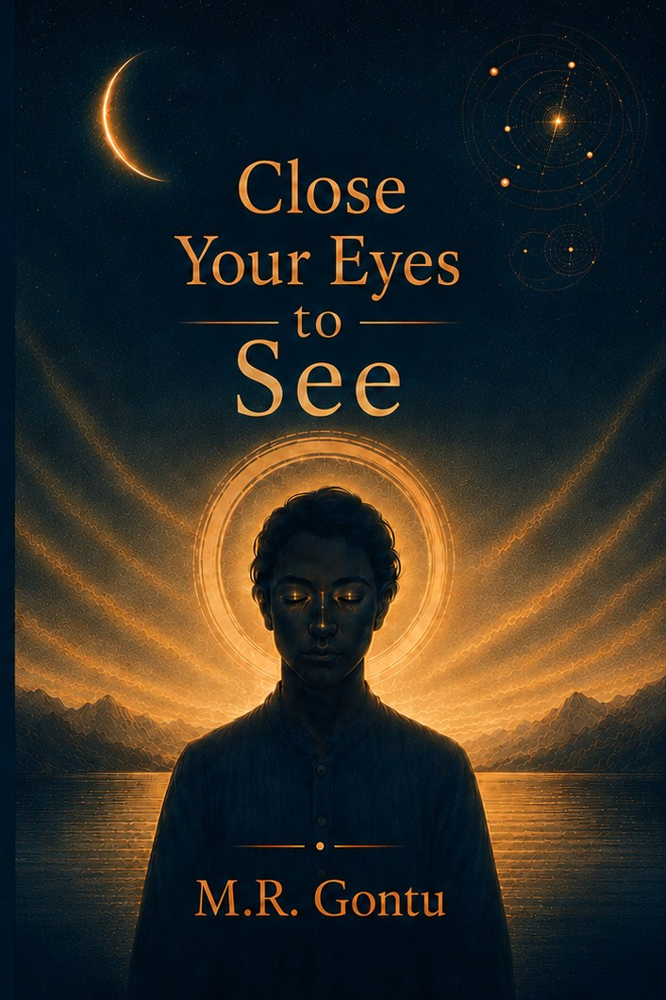

The Book
Intercognix
Bizcognix

The Author
Author · Technologist
Exploring how knowledge survives and grows — in ancient stone and symbol, in the unseen spaces between the things we already know, and in the everyday signals that move business.

The Book Close Your Eyes to See What if the past was never silent? A reflective journey into India's ancient temples, symbols, and memory. Explore the book The Practice Intercognix The unknown between the known. A word, and a method, for discoveries hiding between fields that never meet. Explore IntercognixThe Book
Intercognix
Bizcognix
The Author
Hardcover, paperback, and Kindle editions on Amazon in seventeen countries.
Find Your Store